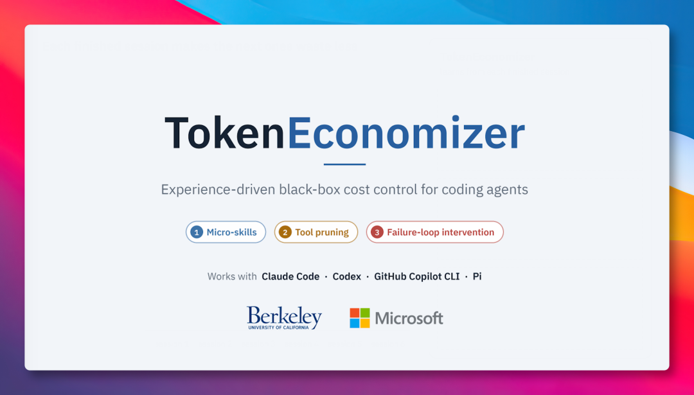
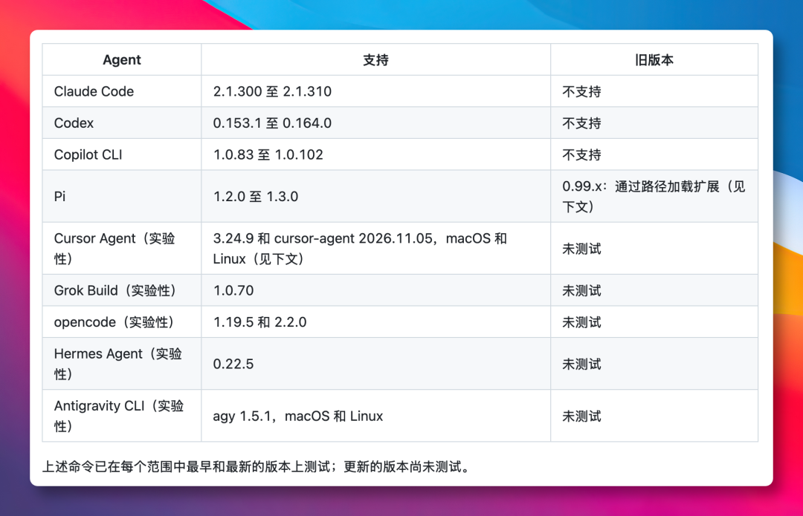
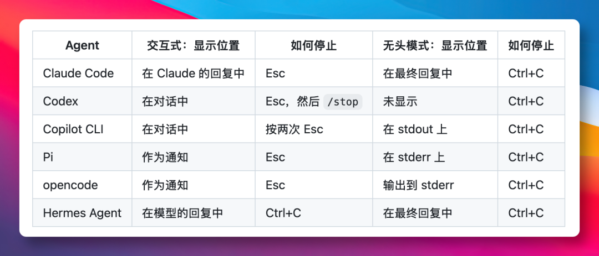
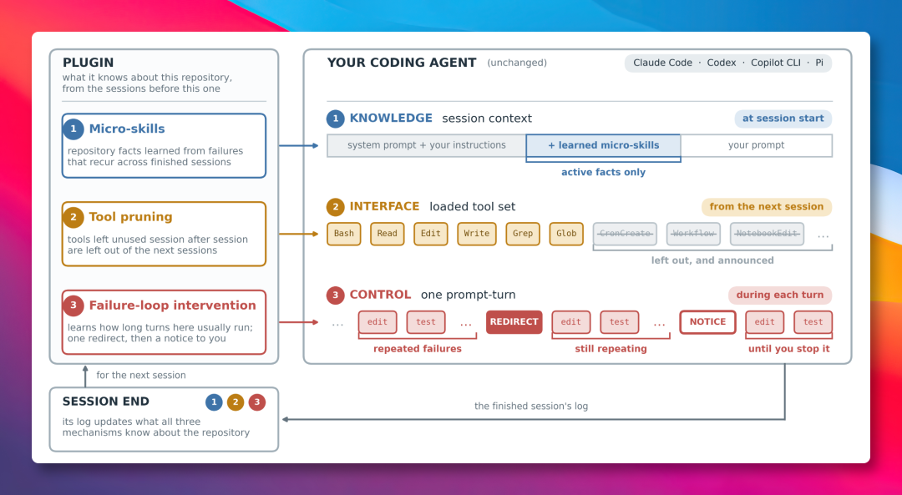
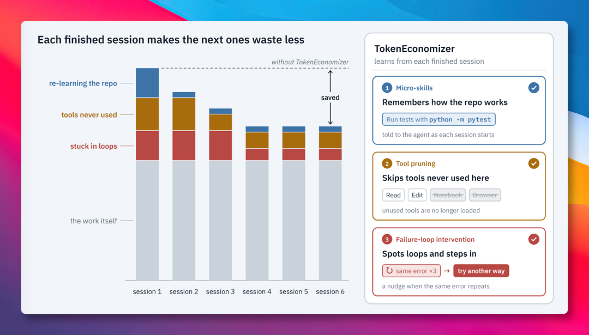
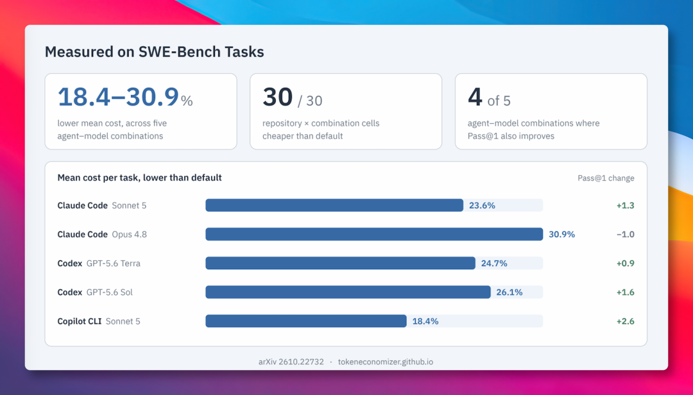
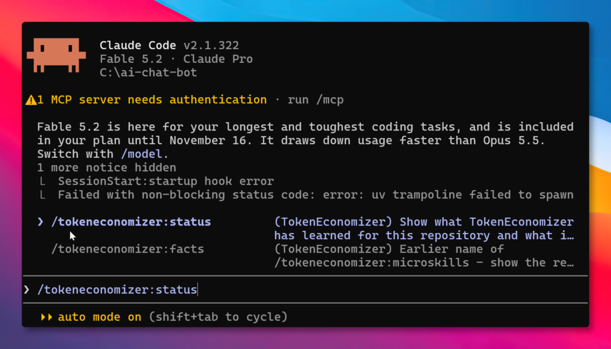

最近身边不少朋友把 Claude Code 切换到最新 Fable 5.2 模型使用了，写代码能力确实又强了不少。
但用着用着就发现额度不太够，官方也建议，日常的任务用 Opus 5.5 就够了，复杂的活再交给 Fable 5.2。
不过我估计大家的心里，肯定还是会优先选择使用新模型，那么能不能让它降低一下 Token 的消耗呢？
答案是可以的。不久前微软悄悄开源了一个插件：TokenEconomizer，专门帮 Agent 降低 Token 消耗。

它的思路不是换个便宜的模型，也不去改 Agent 本身，而是从 Agent 在某个项目里跑过的会话中总结经验。
后面再开会话时，遇到同样情况的时候就照着这些经验处理少走点弯路，所以在经常用的项目里，会越用越省。
目前正式支持 Claude Code、Codex、GitHub Copilot CLI 和 Pi，Cursor、Hermes Agent 等也在实验支持中。

用的是我们 Agent 原本的订阅或登录方式，不需要额外的 API Key，装好之后照常写代码就行。
它一共有三招，先说我觉得最实用的一招，就是在 Agent 卡住的时候拉它一把。
当一轮对话里反复出现同样的报错，它会请一个「裁判」模型来判断，Agent 是不是真的在原地打转。
裁判有七成以上的把握，才会给 Agent 塞一句提醒，让它换个思路再试，每轮最多提醒一次。
如果提醒过后还是卡着，它会告诉我们按 Esc 停下来，但不会自己动手掐断，停不停还是由我们决定。

第二招是把用不到的工具从对话里拿掉。
Agent 加载的每个工具，都会把自己的说明跟着每次请求一起发出去，哪怕整个会话一次都没用上。
TokenEconomizer 会记下每个工具的使用情况，在这个项目里连着几次会话都没碰过的，下次就不再加载。
在 Claude Code 里，它是改项目的本地设置来实现的，哪天又想用了，一条命令就能恢复回来。

第三招是记住项目里的规矩，比如有的项目跑测试要用 python -m pytest，直接敲 pytest 就会报错。
这类坑 Agent 往往每次都要踩一遍，它就把反复出现的失败总结成一句话的事实，下次开会话时提前告诉 Agent。
除此之外，每隔三次会话，它还会让模型把最近的会话回顾一遍，从中找出新的规矩。
为了防止记错，一条事实要被三次会话印证过才会生效，后面的会话证明它不对了，也会自动丢掉。
不过这一招默认是关着的，因为总结事实要额外调用模型，有需要的话可以手动打开。

另外它学到的东西只存在本机，插件自己要是出了问题，会话也会照常进行，就跟没装过一样。
那它到底能省多少呢？团队用 SWE-Bench 里 277 个真实的编程任务做了测试。
测了 Claude Code、Codex、Copilot CLI 分别搭配不同模型的 5 种组合，平均成本降低了 18.4% 到 30.9%。
其中 Claude Code 搭配 Sonnet 5 降了 23.6%，测试用的是 Sonnet 5、Opus 4.8 和 GPT-5.6 等模型，这里面并不包括刚发布的 Fable 5.2。
30 个「项目 × 组合」全都比不装的时候更省，再看任务的完成率，5 种组合里有 4 种还略有提升。
换到网页开发的测试集上，成本也降了 16% 到 21%，就连每个任务都是全新项目的安全审计测试，也能省下 6% 到 20%。

如果想使用，安装也很简单，以 Claude Code 为例，在终端执行下面三条命令：
git clone https://github.com/microsoft/TokenEconomizer.gitclaude plugin marketplace add "$PWD/TokenEconomizer"claude plugin install tokeneconomizer@tokeneconomizer
注意克隆下来的项目文件夹要留着别删，插件就是从这个文件夹里运行的，Codex 的安装步骤也差不多。
装好后，回到平时写代码的项目里启动 Claude Code，输入 /tokeneconomizer:status，看一下插件的状态。

它得看过几次会话，才有东西可学，所以装好后也可以把历史导入打开，让以前的会话记录也派上用场：
/tokeneconomizer:config set history_import=on --global这个选项要在安装后尽早打开，插件还没学过这个项目的会话时，才会导入历史记录。
以后想知道它在这个项目里学到了什么，哪些工具被拿掉了，或者会话花了多少钱，还是用 status 命令来查。
写在最后
之前给大家介绍过类似的工具 Caveman，它是让 AI 说话简短一点，从输出上省 Token。
TokenEconomizer 则会记住这个项目里的经验，在后面的会话里继续用，跟 Caveman 的做法也不冲突。
平时就在固定几个项目里用 Claude Code、Codex 写代码，又经常把额度用完的朋友。
可以装上试几天，再看看 status 里每次会话的花费记录，再决定要不要一直用。
GitHub 项目地址：https://github.com/microsoft/TokenEconomizer
今天的分享到此结束，感谢大家抽空阅读，我们下期再见，Respect！